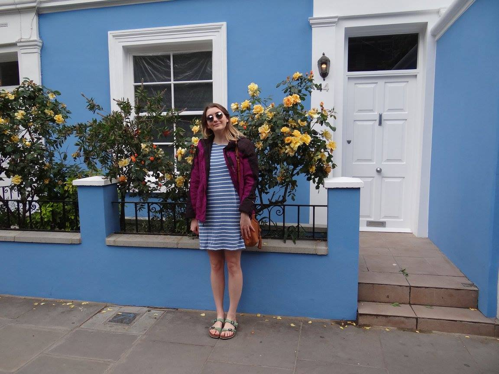
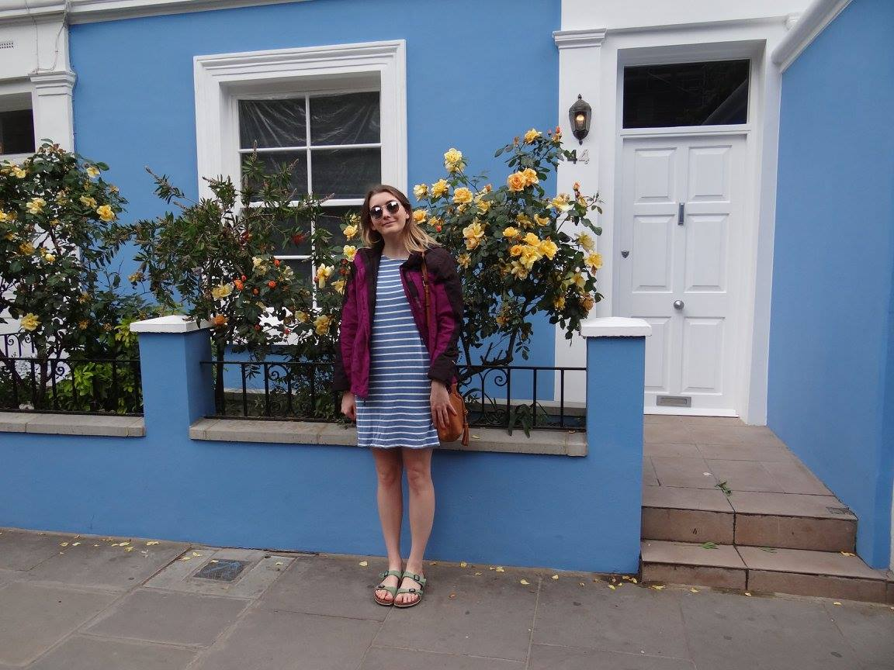

About
Hello! I'm Gabi, please let me join your project! I am a floppy haired junior with a few useful skills, a very large dog, and, now, a Github pages site. This site will hopefully give you an idea of if and how I can contribute to your collaborative project. I've decided to pitch myself (rather than pitching a project) for a few reasons, including:
- to make an alternative resume
- to incorporate social media
- to learn flexbox styling
- to practice creating something for other people
Photos

 
